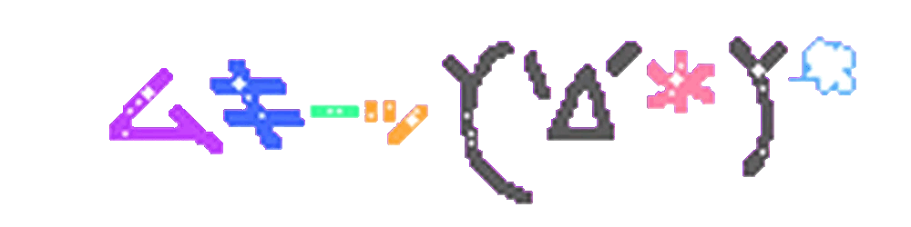
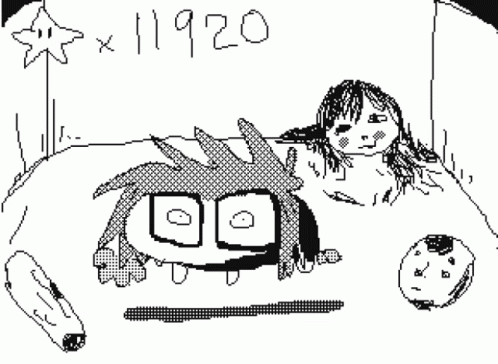

Hola, supongo que caiste aquà por error... Que raro yo también :)
Bueno, te platicaré un poco sobre mÃ, comencemos...
Mi nombre es Arely Paola (Dylan Naathan), tengo 16 años a la fecha, tengo 2 hermanos (Javier Osvaldo y Daniel Alberto) y una hermana (Tania Abigail)
Soy un adolescente como cualquier otro, me gusta hacer dibujos, decorar mi cuarto, leer y a veces escribo.
además me considero una persona Melómana, es decir, siento un gran entusiasmo por la música
más especÃficamente por el género del metal, aunque no sólo me quedo en el metal,
si no que también escucho otros géneros, ya sean más o menos conocidos, por recomendación de mis amigos.
Tengo planes para mi futuro, alguno de ellos serÃa el ser baterista, igual o más rápido que Joey Jordison (ex baterÃsta de Slipknot).

¿Quienes son mis mejores amigos?
- ﹆•:◦✩Sandra (La conocà en la escuela)
- ﹆•:◦✩Amiel
- ﹆•:◦✩Annie
- ﹆•:◦✩Gabo (Lo conocà por internet y
compartimos muchas cosas en común).
✰Trayectoria AcademicaÍ̖‧♡
- ̖́‧♡✩Kinder: Victoria Chaix
- ̖́‧♡✩Primaria: Mario ColÃn Sánchez
- ̖́‧♡✩Secundaria: Salvador DÃaz Mirón núm.99
- ̖́‧♡✩Prepa Oficial núm.87
- ̖́‧♡✩Act. CBT No.2
Mis comidas y bebidas favoritas
- ‹3La pechuga empanizada
- ‹3Las hamburguesas
- ‹3La pizza
- ‹3Arroz chino
- Bebidas
- ★★Dr.Pepper★★
- ★★Agua de Jamaica★★
Lo que más me gusta hacer
- ೃೀLeer comics, ranfren (o Randal's friends) es
uno de mis favoritos.
- ೃೀDibujar, sobre todo a integrantes de mis bandas favoritas
uso varias técnicas pero las que más me gustan son
Lápiz grafito, colores de madera y acuarela.
- ೃೀEscuchar música
- ೃೀJugar videojuegos, DOOM, Roblox, South Park Phone Destroyer,
Gartic Phone, Pico's school, son los más usados.
La música que más me gusta૮꒰ ˶• ༠•˶꒱რ♡
- ✩°｡⋆⸜ 🎧Black Metal
- Mayhem
- Burzum
- Cabra Negra
- Happy Days
- ✩°｡⋆⸜ 🎧Nu Metal
- Slipknot
- Korn
- System Of A Down
- ✩°｡⋆⸜ 🎧Otros
- KMFDM
- The Cure
- The Smashing Pumpkins
- Rammstein
- Candlemass
- Murderdolls
- Molchat Doma

¡Gracias por leer, nos vemos!
BYE BYE!!!
¿Quén soy?